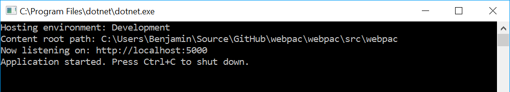
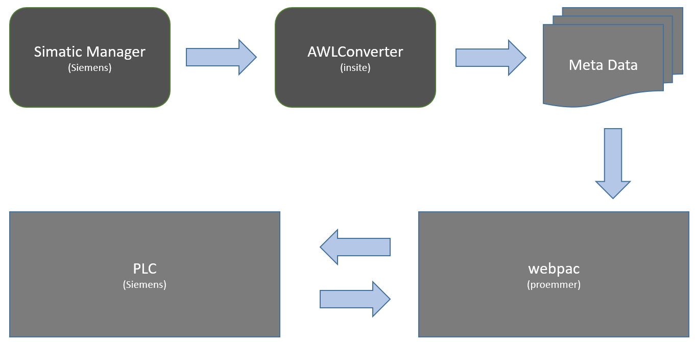

Webpac-documents
documentation of webpac
Project maintained by proemmer Hosted on GitHub Pages — Theme by mattgraham
webpac-docs
(web based plc data access)
Webpac is a software which offers an web-interface for accessing Step7 PLC's. This interface enables you to read and write to/from PLC. Furthermore it supports the functionality to subscribe for events if data changes.

running the application
To start webpac, you have to run the following command:

after this the application runs in the command window:

Absolute (address based access)
The first method to read and write data is by its absolute address. To address a value in the PLC you have to specify the area and the type.
Area
| Area | Name |
|---|---|
| DB[Number] | datablock |
| FB | Flags |
| IB | Input |
| OB | Output |
| TB | Timer |
| CB | Counter |
Address
[Code][Offset][_Length]
| Code | Type |
|---|---|
| BIT | Boolean |
| B | Byte |
| BYTE | Byte |
| C | Char |
| CHAR | Char |
| DATE | Date |
| DT | DateTime |
| DATETIME | DateTime |
| DI | Double Integer |
| DINT | Double Integer |
| I | Integer |
| INT | Integer |
| R | Real |
| REAL | Real |
| TIMEBCD | S7 Time |
| S | String |
| STRING | String |
| T | Time |
| TIME | Time |
| TOD | TimeOf Day |
| W | Word |
| WORD | Word |
| CT | Counter |
| COUNT | Counter |
Symbolic (symbol based access)
The second access method is by its symbolic name. For this, you have to create a data-mapping file. The structure of this file is an C# class with properties. To create such a file is very easy, you could use a tool from insite-gmbh called AWLConverter. This tool extracts the data from the Simatic Manager and converts it to the representation we use.

web api
To visualize and test the web api we added swagger support.

Configuration
The configuration file named 'appsettings.json' has the configuration settings for Logging, Plc, RuntimeCompiler and the Authentication.
Logging
"Logging": {
"IncludeScopes": false,
"LogLevel": {
"Default": "Information",
"System": "Information",
"Microsoft": "Information"
}
}Plc
This section specifies the connection parameter to the PLC.
"Plc": {
"ConnectionString": "Data Source=127.0.0.1:102,0,2",
"ConnectOnStartup": true,
"ReconnectOnConnectionLost": true,
"ReconnectIntervall": 5000
}- ConnectionString: Defines the address to the PLC. Syntax: [IP]:[PORT],[RACK],[SLOT]
- ConnectOnStartup: If this value is true, webpac try connecting to PLC at the application start.
- ReconnectOnConnectionLost: If this value is true, webpac tries to reconnect, when PLC connection goes down.
- ConnectReconnectIntervallOnStartup: This value specifies the connection retry interval.
RuntimeCompiler
"RuntimeCompiler": {
"Location": "C:\\webpac\\data",
"Usings": [
"System",
"Papper.Attributes"
]
}- Location: This value specifies the Location of the symbolic file (C# class files).
- Usings: This is an array of usings depending of the class files you want compile.
Authentication
"Auth": {
"KeyFile": "C:\\webpac\\data\\sec.key",
"TokenValidatenTimeinMinutes": 1440 ,
"Users": [
{
"Type": "ReadOnly",
"Username": "ReadOnlyUsername",
"Password": "ReadOnlyPassword"
},
{
"Type": "ReadWrite",
"Username": "ReadWriteUsername",
"Password": "ReadWritePassword"
}
]
}- KeyFile: This value specifies the Location of the key file for the authentication token (this file will be created on first start).
- TokenValidatenTimeinMinutes: This value specifies the validation time of the token.
- Users.Type: Select the access level for the api calls [Valid parameters are ReadOnly, ReadWrite]
- Users.Username: Name of the user for sign in.
- Users.Password: Password for the specified user.
Used Libraries
To get the PLC access we use two libraries as the following image describe.

Papper
Papper is a data mapper which maps a C# class to a PLC data block. This package is also available as a nuget package.
Dacs7
DacS7 is a low level component which handles the communication to the PLC and is available as a nuget package.